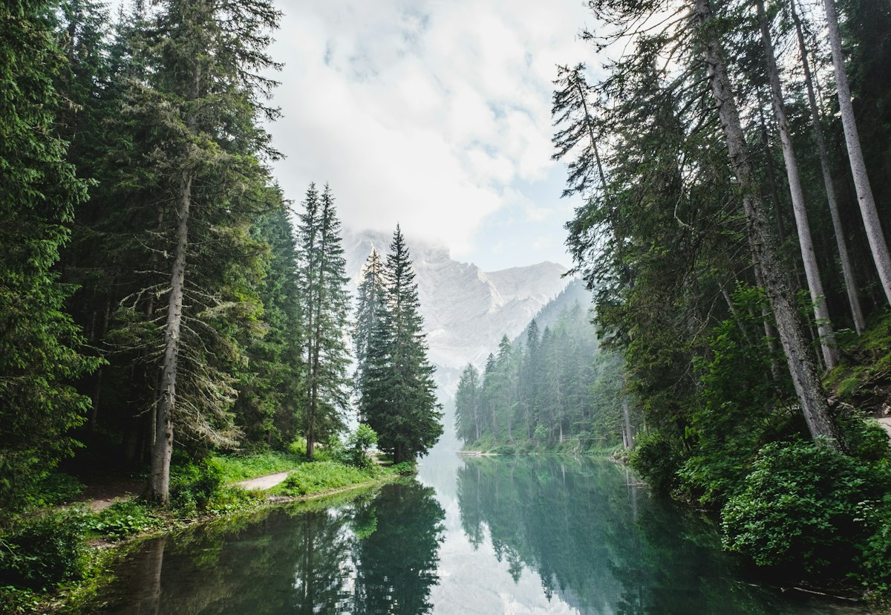

$40
“$40 is the average cost per person to build a charity: water project.”
SourceClean water for every day
For 696 million people, day one of clean water has not happened yet.
Give clean waterWater is the difference between a day that starts with hope and a day that starts with survival. When families have to walk long distances to fetch water, they lose time for work, school, and care. The burden falls most heavily on women and girls, who spend hours carrying water instead of building a future.
charity: water helps solve that problem at its source. The organization funds water projects that bring safe, reliable access to communities that need it most, with a focus on lasting infrastructure and transparent reporting.
“Thanks to generous private donors who fund our operational expenses, 100% of your donation directly funds clean water projects.” charity: water

“charity: water uses 100% of your donation to fund clean water around the world and then proves every single project you fund, complete with GPS coordinates and photos.” charity: water
Every gift helps a community move from waiting to water on tap, toilets that work, and a healthier daily rhythm.
Donate now